Fintastic Fish and Where to Find Them
A guide to finding fish around the Isles of Shoals
Marshall Mumford and Mike Sigler, 2025
This guide was compiled by Marshall Mumford and Mike Sigler to help students at Shoals Marine Lab find and study fish species. The data started in 2025, a year that saw increased numbers of cold water species, so it may not be representative of all years.
Each species page brings together field observations, photos (underwater, in hand, and as prey where we have them) and distribution maps from remote underwater video, traps, seines and rod and reel.
Species
- Atlantic Cod
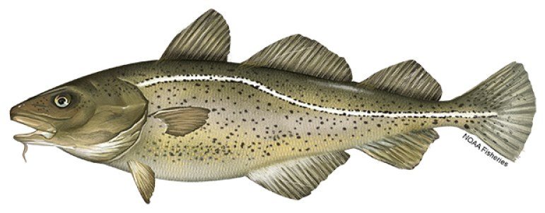
- Atlantic Pollock
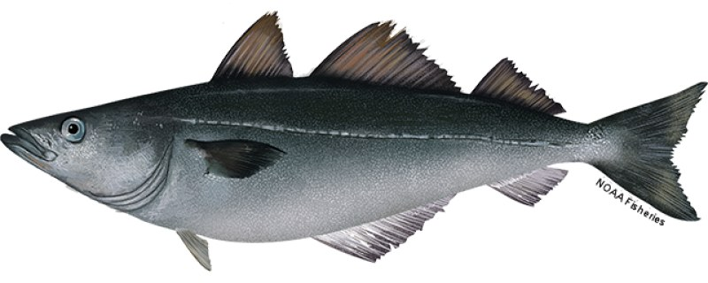
- Cunner
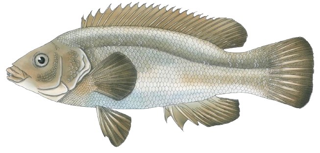
- Rock Gunnel
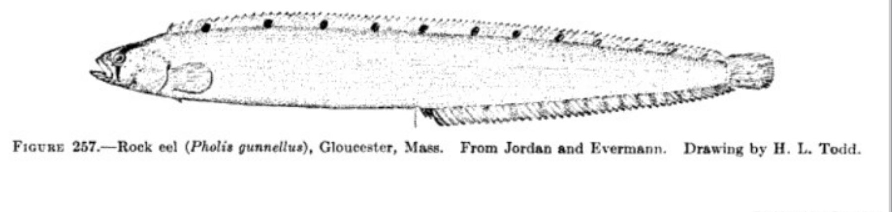
- Mummichog
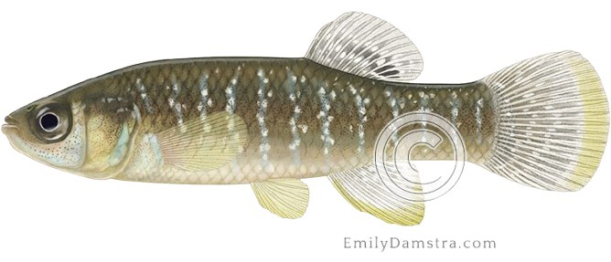
- Atlantic Mackerel
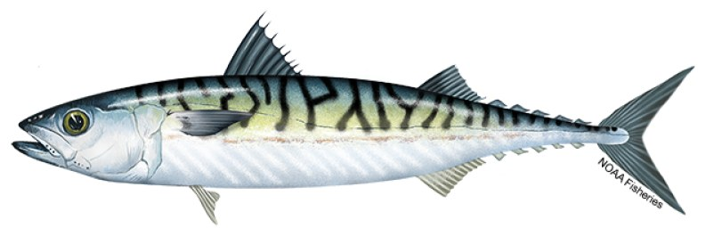
- Winter Flounder
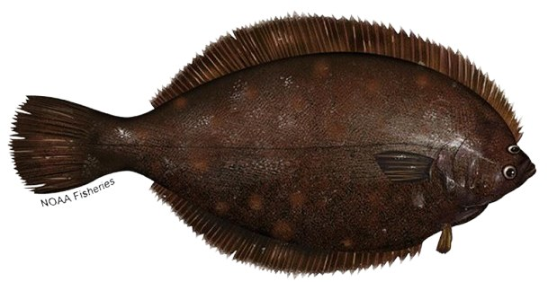
- Rockfish
- Sculpin
- Atlantic Herring
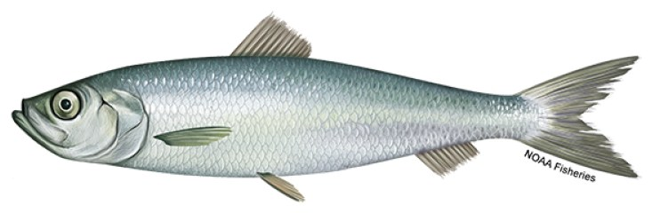
- Rainbow Smelt
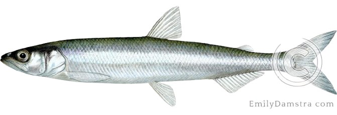
- Sandlance
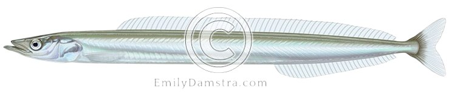
- Atlantic Tomcod
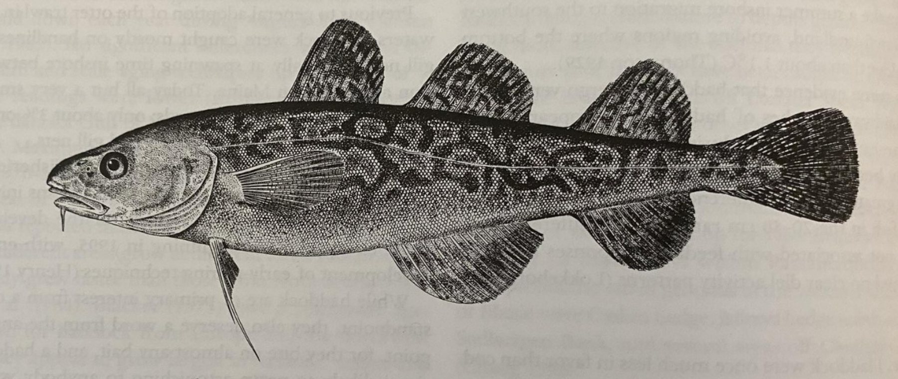
- Striped Bass
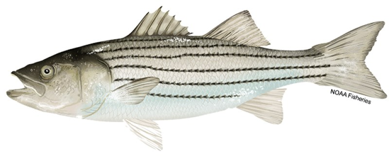
More from the guide
Reading the maps
- Dots
- Remote underwater video sites. Purple means higher abundance, blue means infrequent. Site-level data is in the 2025 Underwater Ecology and Oceanography SURG data, or by request from marshallmumford7@gmail.com.
- Diamonds
- Successful trap efforts. Traps ranged from minnow traps for small fish like gunnel, mummichog and cunner, to larger collapsible traps for crabs and larger fish, plus seining. For seine species, blue diamonds also mark areas of reliable foraging by terns. These locations come from Mike Sigler’s additional sampling comparing methods of assessing fish populations.
 Rod icon
Rod icon- Successful rod and reel catches. Rigs ranged from bottom rigs to sabiki rigs. Sabiki rigs were unbaited; bottom rigs were baited with chunks of thawed mackerel. Some catch specifics are in Mike Sigler’s additional sampling data; other spots are simply regularly fished “good spots”.
Adding to the guide
The Google Slides version has editing enabled. Add new spots, catches or observations by copying the map icons onto a distribution map. Template slides are left for rare or understudied species, so add to them as new data comes in. For a species without a slide, copy a template slide to the end of the document and edit the title. We aimed to include a photo of each fish underwater, in hand, and as prey, but any varied look at the same species is great.